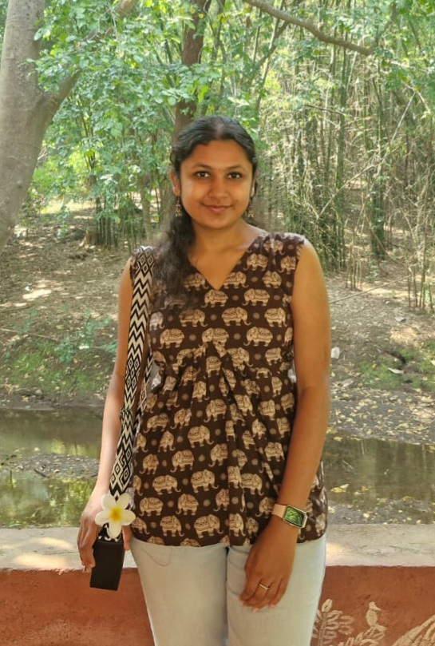
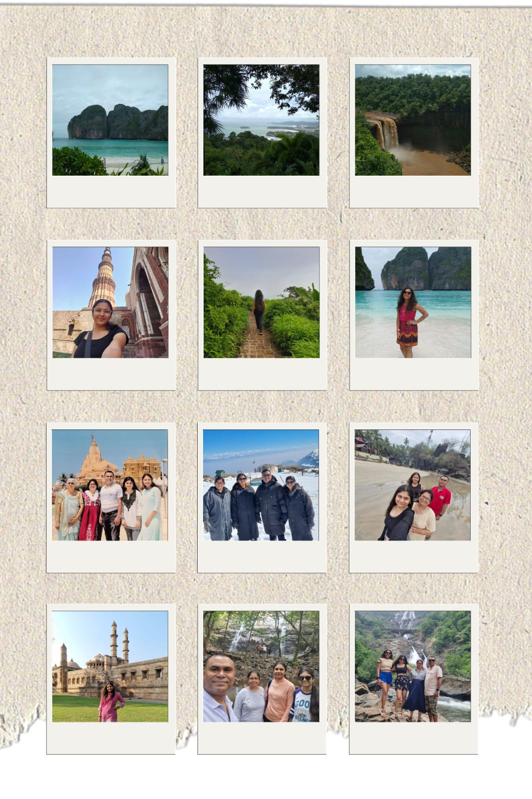
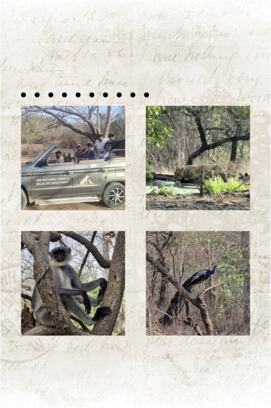
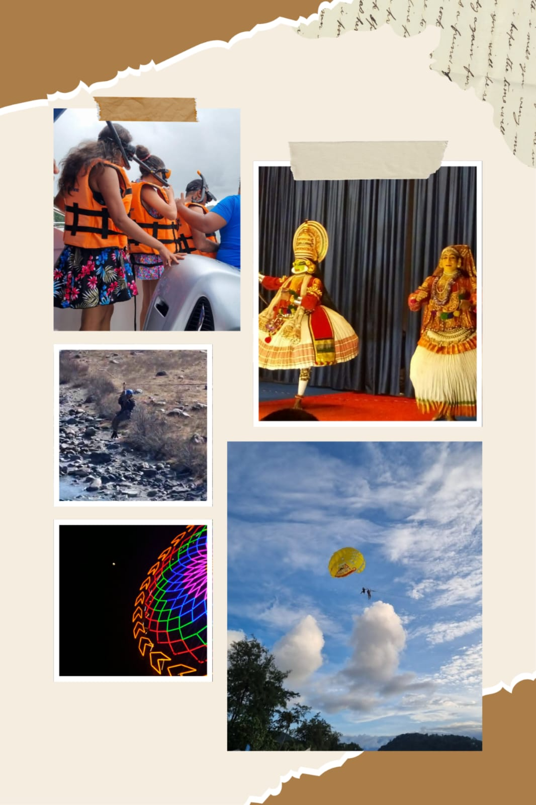
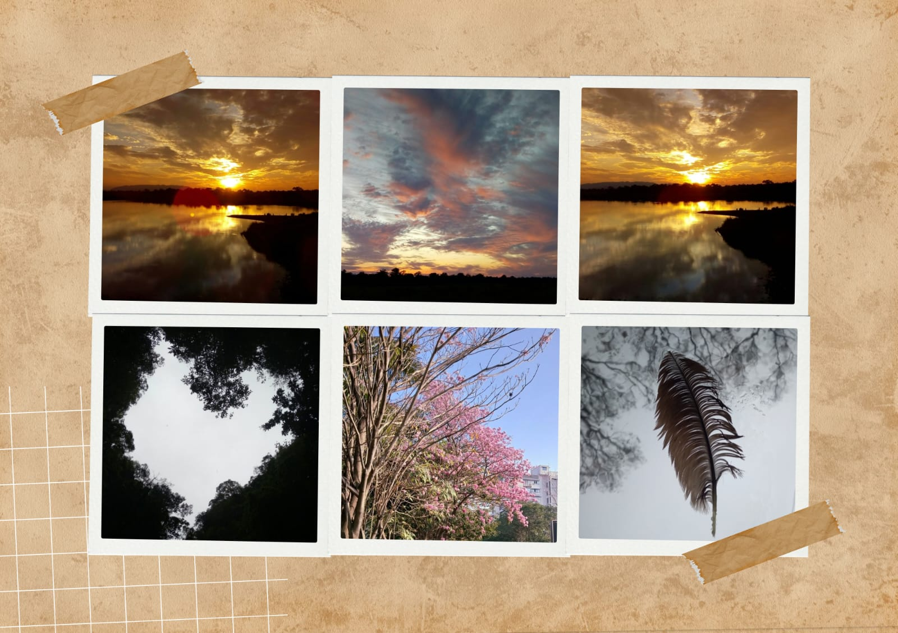
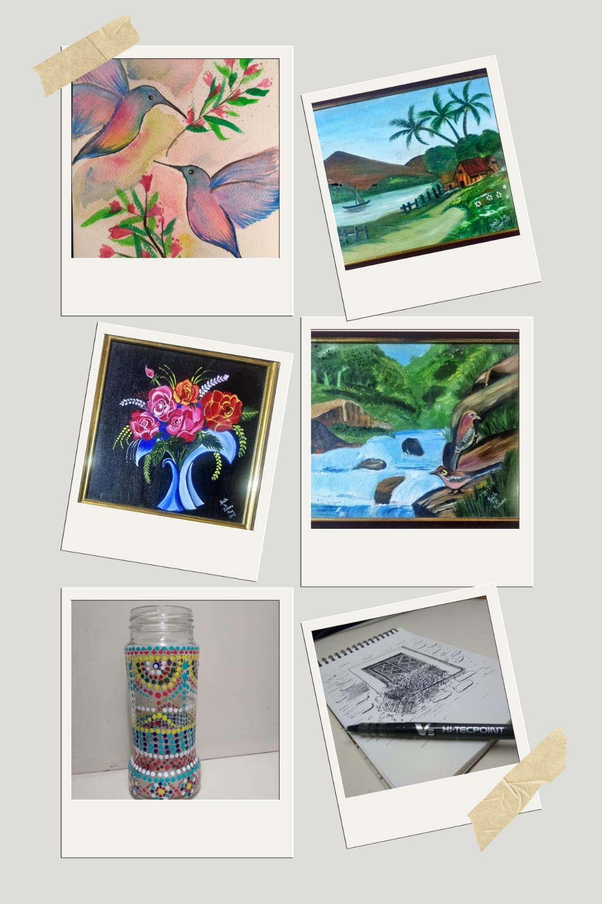

Meet
Ipsita
a journal of the things that make me, me
About Me
My journey has taken me from engineering machines at John Deere to exploring AI, automation and innovation, including contributing to a patent.
A Mechanical Engineering Gold Medalist from NIT Surat, now pursuing my MBA at IIM Mumbai, I enjoy stepping into unfamiliar spaces, learning quickly and turning ideas into action.
What drives me most is creating meaningful impact — for people, businesses and the world around them.

What pulls me in
Travel is how I understand that the world is bigger than any single perspective, mine included. I want to experience places firsthand and meet the people who make them what they are.
A blank page becoming a sketch, a photograph or an idea gives me a particular kind of joy. I love making.
A remembered detail, a message at the right time or simply making someone smile can change a day. That matters to me.
New skills, new perspectives and new experiences keep me moving. I never want to be finished learning.

What beauty means to me
Beauty, to me, is natural.
Every flower is beautiful in its own way. Every tree, every waterfall, every mountain, every feather, every animal, every imperfect little thing in nature has its own character.
I've realised that the most beautiful things aren't usually trying to be beautiful. They simply exist as themselves.
A flower doesn't need to be the biggest flower. A tree doesn't need perfect symmetry. A landscape doesn't need a filter.
That is what beauty means to me: being fully what you are, with care rather than correction.

“Nature doesn't try. It simply is.”
The L'Oréal brand I relate to most
Quiet confidence. Care backed by understanding.
What draws me to La Roche-Posay is its philosophy of paying attention to what people genuinely need. It doesn't feel like beauty for the sake of beauty; it feels like care with a purpose.
I relate to that restraint. I would rather let something speak through what it actually does than through how loudly it presents itself.
There is also something very human about caring for people on the days when they don't feel their best. To me, beauty should make people feel comfortable being themselves — not pressure them into becoming someone else.
My strengths
I don't mind not knowing things. When I'm dropped into something unfamiliar, I can usually find my footing reasonably quickly — mostly because I'm not embarrassed to ask basic questions or start at the bottom.
Small details, a shift in someone's tone, the thing nobody quite said. I think sketching did this to me — you can't draw something until you've actually looked at it properly. It's carried over into how I read situations and people.
If I've taken something on, I'd rather give it proper attention than spread myself across too much. I'd like to think people can rely on me to see things through.
Not as a strategy — I just do. I remember what people tell me, and I usually notice when someone's having a hard time. I think teams work better when someone's paying attention to that.
My growth edges
I tend to take ownership seriously, which sometimes means I try to carry more than I need to. My instinct is often to solve things myself before involving others.
I've started involving people earlier and being more deliberate about what actually needs my ownership versus what can be shared. I'm learning that good ownership isn't doing everything yourself — it's making sure the right things get done.
When something genuinely interests me, I can become deeply absorbed in figuring it out. The downside is that I sometimes lose sight of the bigger picture or spend longer than necessary on one part.
I now pause at natural checkpoints and ask myself: Is this still the most valuable thing I could be working on? It helps me step back without losing the curiosity that got me there.
My growth edges, continued
I tend to observe before I speak. I like understanding the context and hearing different perspectives first, but sometimes that means I take longer than I should to put my own view forward.
I've started challenging myself to contribute earlier, even if my thought isn't fully formed. I've realised that a perspective doesn't have to be perfect to be useful.
I'm naturally curious, so when something new comes up, my first instinct is usually why not? That can sometimes leave me juggling too many things at once.
I now look at what an opportunity will replace before saying yes to it. I'm learning that being curious about everything doesn't mean I have to pursue everything.
Say yes to the unfamiliar.
I am down for any new experience.
Put me somewhere I've never been, ask me to try something I've never tried, introduce me to a culture I don't know — I'm in.
For me, memorable moments usually begin with a little uncertainty. An adventure activity, a new performance, a wildlife sighting, a completely different landscape — I like the feeling of not knowing exactly what comes next.
I don't want a life that feels pre-written. I want stories I couldn't have planned.

Sometimes, I catch the moment.
A small fun fact.
I sometimes surprise myself by taking genuinely good photographs of nature.
Not for the grid. Not because I planned the shot. Just because something stopped me in my tracks — the light, a feather, a sunset, a tree in bloom — and I happened to have my camera.

I like making things.
Creating something out of nothing.
There is a feeling I chase: the moment a blank page stops being blank.
Sometimes it becomes a sketch. Sometimes a photograph. Sometimes an idea that didn't exist five minutes ago.
The medium changes. The instinct doesn't.
I also love noticing details — light, colour, texture, expressions, the tiny things other people walk past. Looking closely is part of how I create.

This is the shortest honest version of me. Not a list of what I've done, but a record of what I notice, what I chase and what I'm still learning to hold more lightly.
If any of it sounds like someone you'd want on your team, I'd love to keep the conversation going.